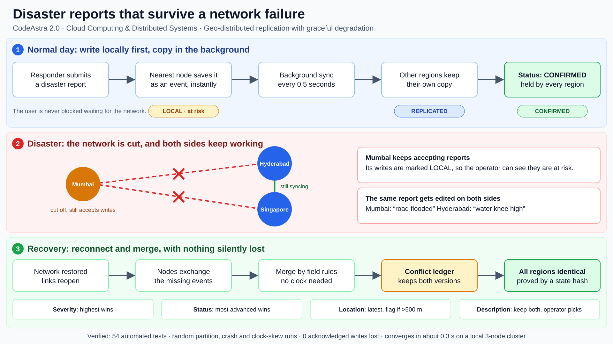

During a disaster, the region that most needs to record reports is often the one that has lost its connection to everyone else. Most cloud databases force a bad choice: refuse writes until the network returns, or accept writes and silently overwrite whichever edit has the older timestamp.
We are building a replicated report service that takes a third path:
The replication engine is built and verified: three nodes replicate, survive partitions, crashes and wrong clocks, and converge to identical state. It runs in Docker and is deployed as three servers on AWS (Mumbai, Hyderabad, Singapore), where the full partition, heal and crash-recovery scenario passes 12 of 12 checks. The comparison benchmark against a last-writer-wins baseline is complete (section 9). The operator dashboard and a run of the mixed AWS and Google Cloud deployment are the remaining work.
Problem statement (Cloud Computing & Distributed Systems, #2): critical systems cannot assume a single region or network path is always available. During a disaster the system may need to keep accepting reports while disconnected from its primary service and later reconcile conflicting updates.
| What the brief asks for | Our response |
|---|---|
| Two or more replicas, local writes, persistence | Three replicas, each its own process; every node writes to its own SQLite event log first |
| Replication protocol and recovery | Pull-based version-vector sync every 0.5 s, relaying through third nodes, catch-up after a heal or crash |
| Partition simulation | Per-link block, node pause (crash), clock skew and reset through an admin API |
| Defined conflict-resolution policy | Per-field merge rules plus a conflict ledger and operator decisions |
| Consistency-status API | /status, per-report durability, /state-hash |
| Operational dashboard | Web dashboard (in progress, built by a teammate) |
| "Explicitly choose and defend your consistency model" | Section 4 |

Figure 1. End-to-end workflow: normal operation, disaster partition, recovery and merge.
| Field | Two edits at the same time | Why this rule |
|---|---|---|
| Severity (1-5) | Highest value wins; lowering needs an operator | In a disaster, under-reporting is more dangerous than over-reporting |
| Status | Most advanced wins (open < acknowledged < in progress < resolved); reopening needs an operator | Work already done should not be silently undone by a stale update |
| Location | Latest wins; if the two are more than 500 m apart, flag for an operator | Small corrections are safe; large jumps need a human |
| Description | Keep both versions and ask an operator | Free text cannot be merged safely by a rule |
| Type, reporter | Fixed at creation | Identity of a report must not drift |
If a later edit was written by someone who had already seen both versions, it simply supersedes them. Every concurrent disagreement stays in the ledger as history, whether a rule or a person resolved it.
| Status | Meaning |
|---|---|
| local | Only this node holds the report. If this node is lost, the report is lost. |
| replicated | At least one other node is known to hold every event of the report. |
| confirmed | Every other node is known to hold it. |
Each node exposes a hash of its merged state and the list of event ids it holds. Equal hashes mean two nodes hold the same events and merged them identically. An automated tester uses these to check, after every fault run, that nothing was lost and everything converged.
Evidence level: verified means confirmed in documentation or papers during our research; general knowledge means widely known but not re-verified by us.
| Approach | What it does | Where it falls short for this problem | Evidence |
|---|---|---|---|
| DynamoDB Global Tables, eventual mode | An isolated region keeps accepting writes and catches up when healthy | Conflicts resolved by last writer wins, so one edit is silently discarded; depends on clocks | verified |
| DynamoDB Global Tables, strong mode | A write is confirmed only after another region has it | Exactly 3 regions (or 2 plus a witness), no transactions, higher write latency; an isolated region cannot get confirmation (our inference) | verified (partition behaviour inferred) |
| AWS Amplify DataStore / AppSync | Offline-first client sync with Auto Merge, optimistic concurrency or a custom Lambda | Auto Merge prefers the server value for single fields; custom logic is left to the developer; syncs devices to one cloud endpoint; Gen 1 reaches end of life on 1 May 2027 | verified |
| Consensus databases (Spanner, CockroachDB, etcd) | Strong consistency through majority agreement | The minority side of a partition cannot commit writes | general knowledge |
| Cassandra, Riak, CouchDB | Always-writable replicas | Typically timestamp-based or revision-based winners that can hide the losing version | general knowledge |
| CRDT libraries (e.g. Automerge) | Replicas converge automatically, peer to peer, with no central server | Built for collaborative documents; no domain rules (such as severity can only escalate), no operator workflow, no durability status | verified (domain gap is our assessment) |
| Real-world track record (Jepsen) | Independent fault-injection testing of databases | Found split-brain, lost acknowledged writes and lost updates in production systems, so "it replicates" is not proof | verified |
| Azure Cosmos DB, multi-region writes | Always-writable regions with a configurable conflict policy | Default is last-writer-wins on a timestamp; conflicts resolved that way do not appear in the conflict feed, and the policy cannot be changed after the container is created | verified |
| AWS QLDB (ledger database) | A managed, cryptographically verifiable ledger | Retired on 31 July 2025. The suggested replacement, Aurora PostgreSQL with audit logging, is reported to lack the cryptographic verifiability QLDB gave | verified (secondary sources) |
| Cross-cloud replication | Distributed SQL such as CockroachDB spans clouds; common practice is active-passive | No managed service offers active-active across AWS and Google Cloud that stays writable on the minority side of a partition; consensus systems need a majority | search found no counter-example |
We want to be clear about what is new. Event logs, hybrid clocks and version vectors are established techniques. Our contribution is combining them into a disaster-operations service with behaviour and verification that general-purpose tools do not provide.
| Idea | What it gives the user |
|---|---|
| Domain-aware merge rules | Safe defaults for disaster reports: severity escalates, status advances, location jumps are flagged. Not a blanket "latest wins". |
| Visible conflict ledger | Every concurrent disagreement is stored with both versions and who decided. Nothing disappears silently. |
| Per-report durability | Operators see which individual reports are still at risk, not just a table-level latency number. |
| Causality, not clocks | Correct behaviour even when a node's clock is an hour wrong. We test this explicitly. |
| Built-in proof | A chaos tester runs random partitions, crashes and clock skew, then asserts convergence and zero lost writes, and compares against a last-writer-wins baseline. |
| Safe reset across nodes | Epoch numbers prevent old data reappearing after a cluster reset, a real operational trap. |
| Tamper-evident history | Each event is hash-chained to the previous one from the same node. Editing, deleting or forging a stored event is detectable by recomputing the chain, and a replica refuses forged events from a peer, then recovers from an honest one. AWS retired its ledger database, QLDB, in July 2025, so this fills a gap rather than repeating a product. |
| Independent of any one provider | Nothing depends on a managed database, so the same image runs on AWS and Google Cloud and a whole-provider outage cannot take all replicas down. Managed services cannot replicate across clouds, and consensus databases cannot write on the minority side of a partition. |
| Layer | Choice | Reason |
|---|---|---|
| Language | Python 3.13 | Fast to build and test; strong ecosystem for fault-injection scripts |
| API server | FastAPI + Uvicorn | Typed requests, automatic interactive docs |
| Storage | SQLite (one file per node) | Durable across crashes, zero setup; fits the simulated-region scope |
| Node-to-node calls | httpx | Simple HTTP, easy to block and inspect in tests |
| Tests | pytest | Unit, multi-node and random-fault tests |
| Packaging | Docker and Compose | One command for teammates; same image locally and in the cloud |
| Cloud | AWS EC2 in three regions (deployed) | Real geographic separation. One small instance per region, created and removed by one script, all resources tagged for clean teardown |
| Access control | Shared-secret header on admin, sync and operator endpoints | Lets the nodes be reachable from any network while fault injection and operator decisions stay protected; reporting and reading stay open |
| Dashboard | Web single-page app | Shows regions, reports, conflicts and fault controls |
We deliberately did not implement Raft or Paxos: this problem calls for an available design, and consensus would reintroduce the exact failure we are avoiding.
| Component | Status | Evidence |
|---|---|---|
| Event log, logical clock, create and edit API | Done | Unit and API tests |
| Merge engine and per-field rules | Done | One test per rule, plus 40 random histories |
| Conflict ledger and operator resolve | Done | API and replication tests |
| Sync between nodes, relaying, batching | Done | Multi-node tests |
| Durability states, peer status, state hash | Done | Multi-node tests |
| Fault injection (block, pause, clock, reset) | Done | Admin API and tests |
| Local three-node cluster and smoke test | Done | 12 of 12 checks over real HTTP |
| Docker packaging | Done | Image and compose file; data survives a hard kill and a full restart |
| Admin token on sensitive endpoints | Done | Tests for open, protected and wrong-token cases; verified live on AWS |
| AWS three-region deployment | Done | Mumbai, Hyderabad and Singapore; 12 of 12 checks across the real regions |
| Last-writer-wins baseline and chaos benchmark | Done | 100 trials per system, 5 scenarios, results file and charts generated |
| Tamper-evident hash-chained log and audit endpoints | Done | 10 tests; live tamper demo detects an edit made behind the app |
| Google Cloud deployment script | Prepared | Written and syntax-checked; not yet run against a real project |
| Operator dashboard | In progress | Assigned to a teammate; built against the API contract |
| Check | Local cluster | Three AWS regions |
|---|---|---|
| Automated tests | 72 passed | |
| Random fault runs (writes, partitions, crashes, clock skew) | 25 seeds: always converged, no acknowledged write lost, identical ledgers | |
| End-to-end smoke test (replicate, partition, heal, crash) | 12 of 12 passed | 12 of 12 passed |
| Report appears in another region | 0.3 to 0.5 s | 0.17 s |
| Report reaches "confirmed" everywhere | about 0.5 s | 0.29 s |
| Convergence after a partition heals | 0.2 to 0.35 s | 0.56 s |
| Crashed node catches up after resuming | 0.1 to 0.3 s | 0.40 s |
100 trials per system (20 per scenario, seed 11), local clusters, identical randomised operations applied to both. Edits are made during partitions, pairwise cuts, flapping links, a crashed node and a fast clock. An edit is "silently lost" when its value is absent from the final report and from every conflict-ledger entry, and no warning was returned when it was accepted.
| Measure | Our engine | Last-writer-wins baseline |
|---|---|---|
| Replicas converged | 100% | 100% |
| Acknowledged edits silently lost | 0.0% (0 of 199) | 42.2% |
| Acknowledged events missing from final state | 0.0% | 24.5% |
| Causally later edit overridden by a fast clock | 0 of 20 | 20 of 20 |
| Trials with no loss | 100 of 100 | 9 of 100 |
| Convergence after healing, p50 / p95 | 18 / 138 ms | 8 / 119 ms |
The baseline converges slightly faster, which is expected: it keeps no history to exchange. The scenarios are deliberately conflict-heavy stress tests, so these percentages show behaviour under failure, not the loss rate of a normal workload.
Timings are measured from a laptop that polls the nodes over HTTP, so they include the laptop's own network round trip and a 0.1 s polling step. Read them as upper bounds on the replication delay, from a single run each, not as a statistical benchmark.
| Method | What it shows |
|---|---|
| 1. Live partition demo | Cut a region, edit the same report on both sides, restore, show the merge and ledger. |
| 2. Side-by-side baseline | The same scenario on a last-writer-wins cluster: an edit disappears there, but not in ours. |
| 3. Automated chaos benchmark | Hundreds of seeded random runs with a pass/fail table and charts. |
| 4. Real multi-region deployment | Three AWS regions, with the partition triggered live. |
| 5. Written model defense | This report, section 4: why availability, what is lost, and what is not. |
| ID | Invariant | How it is checked |
|---|---|---|
| I1 | All nodes converge to the same state | Equal state hashes |
| I2 | No acknowledged write is lost | Every acknowledged event id exists on every node |
| I3 | No silent overwrite | Each concurrent disagreement is covered by a rule or a ledger entry |
| I4 | Status never moves backwards without an operator | Compare final status with all writes |
| I5 | Severity never decreases without an operator | Compare final severity with all writes |
| I6 | Convergence time | Measured from heal to equal hashes (p50 and p95) |
The headline figure is the silent-overwrite rate: in the benchmark of section 8, 42.2% of acknowledged edits vanished under last-writer-wins and none did in our engine. The baseline is our own implementation of item-level last-writer-wins, modelled on how DynamoDB Global Tables and Cosmos DB behave by default, not those products themselves. It replicates and converges correctly, and shares the engine's request validation, so the comparison is like for like.
| # | Task | Owner | Done when |
|---|---|---|---|
| 1 | Docker image and Compose for the three nodes | Engine / infra | Done: smoke test passes against containers |
| 2 | Connect baseline and dashboard to the engine | All | Dashboard drives the real cluster |
| 3 | Run the chaos benchmark on both clusters | Engine / infra | Done: results file and charts produced |
| 4 | Deploy three nodes to AWS regions | Engine / infra | Done: partition and heal verified across regions |
| 5 | Rehearse the demo twice, with a laptop-only fallback | All | Runs without venue Wi-Fi |
| 6 | Feature freeze, final report and slides | All | Submission ready |
possible_duplicates field that is currently empty.| Item | Mitigation or honest position |
|---|---|
| Data lost if a region is destroyed before syncing | Shown as local to operators; sync window about 0.5 s. Cannot be eliminated. |
| Integration of work from several people | Shared API contract, mock-first development, fixed integration checkpoints. |
| Cloud setup or venue network failure during the demo | Identical local cluster as a fallback. |
| Cost of running three cloud machines | Small instances, billing alarm already set, tagged resources and a one-command teardown. |
| Security is prototype-grade | Admin, sync and operator endpoints need a shared secret, but it travels over plain HTTP and anyone can create or read reports. HTTPS, per-user identity and signed messages are the production answer. |
| Not load tested | SQLite per node and three nodes only. The prototype proves behaviour under faults, not throughput. |
| The baseline is our model, not the products | It follows how DynamoDB Global Tables and Cosmos DB behave by default, but the real services were not benchmarked. The report says so wherever the numbers appear. |
| Tamper evidence is not tamper proofing | An administrator can still change a node's database. The change is detectable, but only by comparing against other replicas or an earlier head hash; the chain is not signed. |
| Google Cloud deployment not yet exercised | The script is written and checked for syntax; the mixed AWS and Google Cloud run is pending a Google Cloud project. |
| Urgent-first catch-up sync | Not built: it conflicts with the in-order rule that keeps conflict detection correct. We do not claim it. |
| Question | Answer |
|---|---|
| Why not just use DynamoDB Global Tables? | Its default mode resolves conflicts by latest timestamp, so an edit can vanish silently; its strong mode needs another region to confirm each write, which a cut-off region cannot get. We keep accepting writes and keep every version. |
| What if a region is destroyed? | Anything not yet synced is lost. We minimise that window, mark such reports as local, and say so openly. |
| Why not trust timestamps? | Devices in disaster zones often have wrong clocks, so we use causal information from version vectors and logical clocks. |
| Is this just a CRDT library? | No. We use similar convergence ideas but add disaster-specific rules, an operator ledger, durability status and a built-in verification harness. |
| How do you know it is correct? | Per-rule tests, random multi-node fault runs with invariants, and a comparison against a baseline. |
| Is your baseline fair? | It replicates and converges correctly and shares our request validation. It is our own implementation of item-level last-writer-wins, so we describe it as a model of how DynamoDB and Cosmos DB behave by default, not as those products. |
| What is new compared with a CRDT or AWS? | Disaster-specific merge rules with an operator ledger, per-report durability, a tamper-evident hash-chained history that replaces what AWS retired with QLDB, and a design with no managed service, so it runs across cloud providers. |
| Does it scale? | Not tested beyond three nodes and small data. The prototype proves the behaviour, not throughput. |